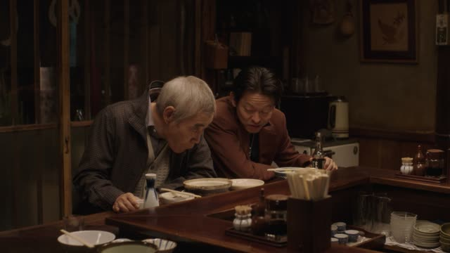
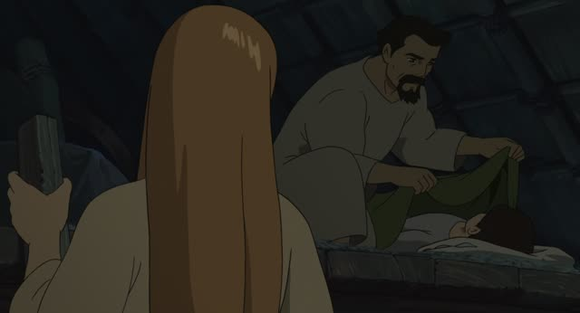
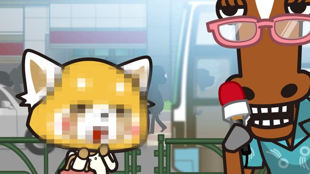
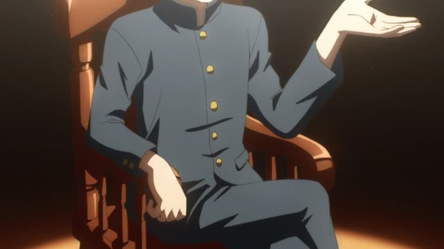

ようだ
| Polite | ～ようです |
|---|---|
| Casual | ～ようだ |
Same meaning: "it seems". Only the politeness changes.
Noun before it? Add の. な-adjective? Add な.
| Word | Add | Ending | ||
|---|---|---|---|---|
| Noun | 学生 | の | ようだ | He seems to be a student |
| な-adjective | 静か | な | ようだ | It seems quiet |
| Verb | 行く | – | ようだ | He seems to be going |
| い-adjective | 高い | – | ようだ | It seems expensive |

Midnight Diner: Tokyo Stories · Season 2, Episode 1
だいぶ お疲れのようですね
"You seem pretty tired."
ようだ means "it seems": you judge from what you see or know. Same meaning as みたい, but more careful and formal: news, writing, polite speech.
It joins like a noun: verbs and adjectives as they are (いいようだ), nouns with の (お疲れのようだ), な-adjectives with な. On this card, he notices Momi-san looks worn out, and she answers with みたい, the casual twin.
In casual talk most people say みたい instead.

Tales from Earthsea
ああ 悪い夢を見たようだ
"Ah, it seems he had a bad dream."
On this card, Arren wakes up shouting, and Sparrowhawk tells Tenar it looks like a bad dream. Older characters in stories often use ようだ even in casual speech.
Quick Examples
The meeting room lights are off.
会議はもう終わったようです。
"It seems the meeting is already over."
PoliteYour friend keeps yawning.
田中さん、眠いようだね。
"Tanaka seems sleepy."
CasualA shop has its shutters down.
今日は休みのようです。
"It seems they're closed today."
Noun + のようです.
PoliteWith and without
外は寒い。
It's cold outside. You're out there.
外は寒いようだ。
It seems cold outside. You see people in coats.
Examples from Media
Kekkon Dekinai Otoko · Episode 2
術後の経過は いいようですね
"Your recovery after the operation seems to be going well."
Doctors use ようです a lot: careful, not 100%.

Aggretsuko · Season 1, Episode 3
だいぶ不満が たまってるようですね
"You seem to have a lot of frustration built up."
Death Note · Episode 1
みんな無事のようです
"Everyone seems to be safe."
A news report: noun + のようです.
Kotaro Lives Alone · Episode 6
ここに移り住んでいるようです
"It seems he's moved here."
Dungeon Meshi · Episode 15
行ったようだ
"Looks like it's gone."
Short and plain: after a past verb.

Teasing Master Takagi-san · Season 2, Episode 4
少し やりすぎてしまったようだね
"Seems you overdid it a little."
Princess Mononoke
私は何日も眠っていたようだな
"It seems I've been asleep for days."
Guessing about yourself from what you notice.
Odd Taxi · Episode 11
山本は信じてくれたようだ
"It seems Yamamoto believed me."
Further Reading
Tae Kim's Guide to Japanese Grammar
Expressing similarity or hearsay · Expressing similarity with 「よう」